Make learning visible.
Make school growth meaningful.
Your complete Skilido field guide: understand the programmes, explain the value, handle objections, lead a school conversation and build a credible partnership proposal.
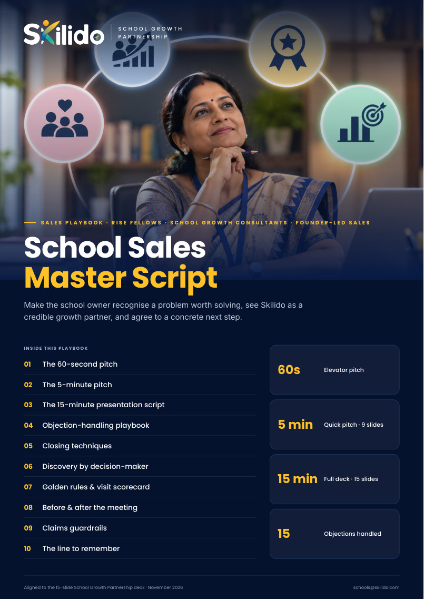
Sell the future, not the product list.
The first meeting is not a product lecture. It is a discovery conversation about the school the decision-maker wants to build.
The first-meeting objective
Not necessarily a signed contract. The first win is when the school owner says:
“This is relevant to my school. Show me how it would work here.”
Move the conversation through five steps:
- Aspiration: the school they want.
- Gap: what is missing today.
- Transformation: what children will do.
- School value: why it matters.
- Next step: a dated commitment.
Three people, three priorities
Chairman / Owner: admissions, reputation and finances.
Principal / Academic Director: student outcomes, teacher workload, academic integration and assessment.
Correspondent / Administrator: execution, staff capacity, costs and parent satisfaction.
Remember: tailor the conversation to the person in front of you.
Four connected moves. One learning journey.
Use this simple structure to remember how the components connect.
Build skills through structured learning experiences.
Give students opportunities to present their learning.
Make learning evidence and progress more visible.
Bring parents and families into the journey.
Know what each programme does.
Use these plain-language explanations when a school leader asks, “What exactly will my students experience?”
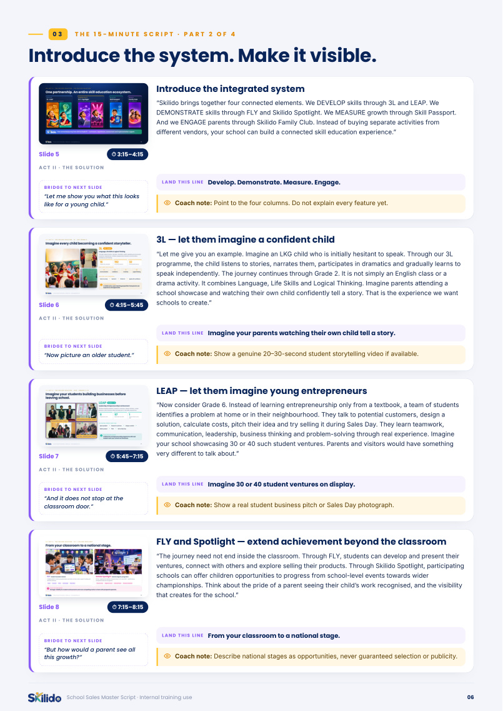
3L
Language · Life Skills · Logical Thinking
Children listen to stories, narrate, participate in dramatics and practise speaking independently. The goal is a gradual journey towards expression, confidence and thinking.
StorytellingNarrationDramaticsCommunication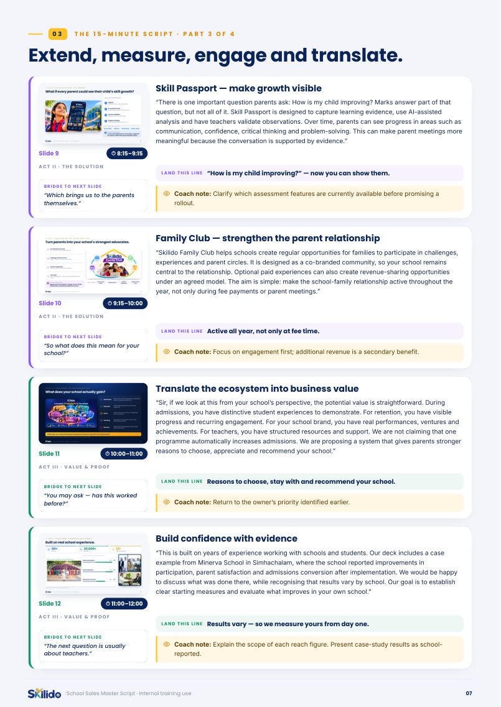
LEAP
Students identify a problem, speak with potential customers, design a solution, calculate costs, pitch an idea and explore selling it.
They practise teamwork, communication, leadership, business thinking and problem-solving through doing.
Problem discoveryProduct designCostingPitching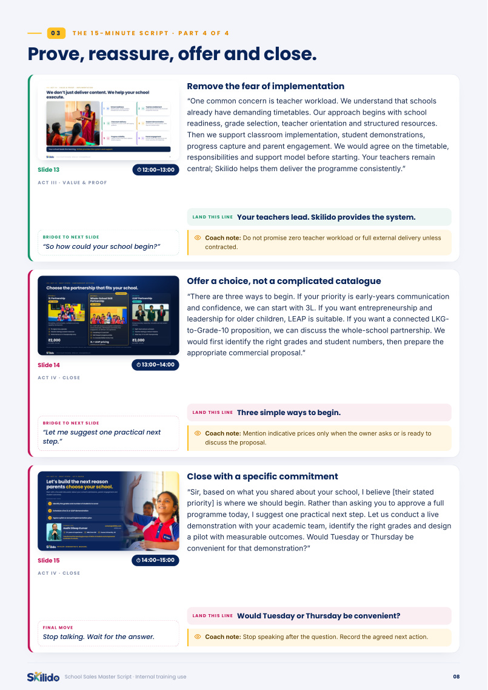
FLY
Students can develop and present ventures, connect with others and explore opportunities to sell their products.
Explain the real opportunities and eligibility available at the time. Do not promise a particular outcome.
PresentConnectExplore sellingSkilido Spotlight
Provides opportunities for student recognition and progression from school-level events towards wider championships.
Participation and selection depend on the current rules. National finals selection is never guaranteed.
ShowcaseRecognitionChampionship pathway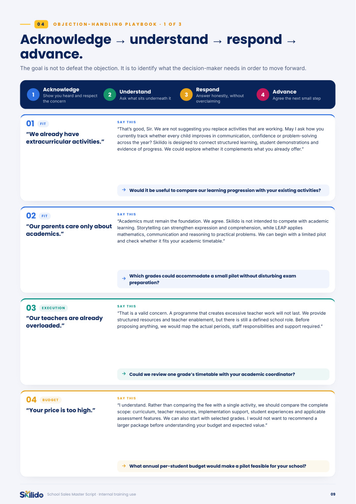
Skill Passport
Designed to capture learning evidence and make progress in communication, confidence, critical thinking and problem-solving more visible.
The PDF describes AI-assisted analysis with teacher-validated observations. Confirm which functions are operational before promising them.
EvidenceTeacher validationProgress visibility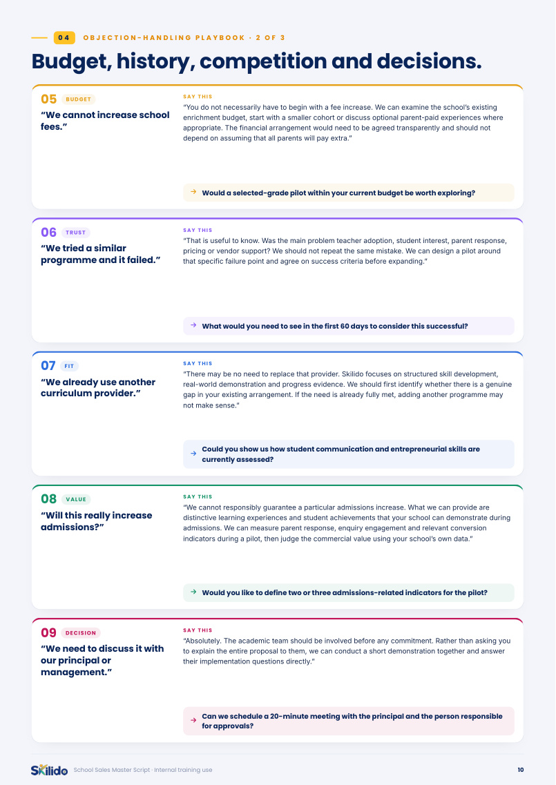
Skilido Family Club
Creates opportunities for family challenges, experiences and parent circles. It is designed as a co-branded community with the school central to the relationship.
Optional paid experiences and revenue-sharing are only discussed where an agreed commercial model exists.
Parent engagementFamily experiencesCommunityThree pitches. One consistent story.
Choose the pitch length based on the time and readiness of the decision-maker.
The elevator pitch
Hook
“Good morning, Sir/Ma’am. May I ask you one question? What makes a parent choose your school over another school offering the same syllabus, similar infrastructure and teachers?”
Parent need
“Today, parents want more than marks. They want children who speak confidently, think independently and achieve something meaningful. And they want to see that progress.”
Skilido
“That is exactly what Skilido helps schools deliver. Through 3L, younger children become confident storytellers. Through LEAP, older students develop real business ideas and present them. Through Skill Passport, parents can see evidence of skill growth. And through our championships and Family Club, schools can showcase achievements and engage families.”
Position
“We are not here to sell another extracurricular activity. We want to help your school become the school parents talk about.”
Ask
“Could we schedule a 20-minute demonstration to show how this could work in your school?”
Five moves in five minutes
“Imagine two schools with similar syllabus, teachers and facilities. In one, every Grade 2 child can confidently tell a story, every Grade 6 student can pitch a business idea, and parents can see evidence of growth. Which school creates a stronger impression during admissions? That is the opportunity we want to discuss.”
“Many schools already organise competitions, annual days and activities. What if skill development happened systematically throughout the year, every grade had a structured journey and parents could see progress? Skilido connects developing, demonstrating and measuring skills.”
“For LKG to Grade 2, 3L uses stories, narration, dramatics and public speaking. For Grades 3 to 10, LEAP helps students identify problems, build solutions, pitch and explore selling. Students learn by doing.”
“Skill Passport is designed to make progress more visible. Spotlight offers recognition opportunities. Family Club creates meaningful parent engagement. These can give schools distinctive student experiences to demonstrate, reasons for parents to stay connected and achievements worth celebrating.”
“We would like to show you a real 3L storytelling demonstration and a LEAP student business pitch. If you see value, we can design a pilot for selected grades with clear outcomes and responsibilities. Would this week or early next week suit your academic team?”
The 15-minute presentation arc
Opportunity
Slides 1–4. Open with the parent-choice question. Understand the school’s priorities. Acknowledge existing activities and introduce the missing link: a connected, visible skill-development journey.
Solution
Slides 5–10. Explain Develop, Demonstrate, Measure, Engage. Introduce 3L, LEAP, FLY, Spotlight, Skill Passport and Family Club with a concrete child/student example.
Value & proof
Slides 11–13. Translate programme features into school value. Present case evidence carefully. Explain implementation support, teacher enablement and responsibilities.
Close
Slides 14–15. Offer a 3L start, LEAP start or whole-school discussion. Close by proposing a live demonstration, selecting grades and designing a pilot with measurable outcomes.
Phone / WhatsApp version
“Sir, we help schools show parents what their children can do: confident speakers in LKG–Grade 2 and real student ventures in Grades 3–10. May I show your team a 20-minute demonstration this week?”
Don’t fight the objection. Understand what sits underneath it.
Use the four-step framework: acknowledge → understand → respond → advance. Expand an objection to study the response and the next question.
01 · “We already have extracurricular activities.”
02 · “Our parents care only about academics.”
03 · “Our teachers are already overloaded.”
04 · “Your price is too high.”
05 · “We cannot increase school fees.”
06 · “We tried a similar programme and it failed.”
07 · “We already use another curriculum provider.”
08 · “Will this really increase admissions?”
09 · “We need to discuss it with our principal or management.”
10 · “Send the brochure. We will get back to you.”
11 · “We don’t have time this academic year.”
12 · “Why should we trust Skilido?”
13 · “We want exclusivity in our area.”
14 · “Can you guarantee our children will reach the national finals?”
15 · “We are interested, but budget approval will take time.”
Translate learning into school value.
School leaders do not all evaluate a partnership in the same way. Make the educational case and the operational case together.
🏫 Chairman / Owner
Primary interest: admissions, retention, reputation and return on investment.
Open with: “What is the biggest challenge in making your school the first choice for parents in your area?”
Focus on: differentiation, parent trust, student outcomes, practical budget and evidence.
Close with: “If we can demonstrate the educational value and establish a practical budget, would you consider starting with selected grades?”
📚 Principal / Academic Director
Primary interest: student outcomes, teacher workload, academic integration and assessment.
Open with: “Which life skills do you most want students to develop, and how are you currently assessing them?”
Focus on: learning progression, timetable fit, teacher support and assessment evidence.
Close with: “Could we involve your teachers in a demonstration and jointly design a timetable-friendly pilot?”
🗂 Correspondent / Administrator
Primary interest: execution, staff capacity, costs and parent satisfaction.
Open with: “When you introduce a new school programme, what usually creates the most difficulty in implementation?”
Focus on: clear plan, responsibilities, cost control and parent communication.
Close with: “May we review your timetable and prepare a clear responsibility and implementation plan?”
The school partnership journey
A credible sales process reduces uncertainty at every step.
Before the meeting. During the meeting. After the meeting.
Consistency turns a good pitch into a repeatable school-partnership process.
24 hours before
Carry the demo kit
🎥 3L storytelling clip · 20–30 seconds, real child.
🎤 LEAP pitch clip · a real student venture.
📘 Skill Passport sample · profile screen or printout.
🪧 School Growth poster · leave-behind for management.
📋 Visit scorecard · record the outcome before leaving campus.
School visit scorecard
Tick each item as you complete it. Your score updates automatically.
Early-stage conversation. Nurture and fill the missing information.
Follow-up rhythm
Thank-you message with highlighted deck.
Confirm demo date and attendees.
Share grade-wise proposal.
Call the approver; resolve open questions.
Decision meeting or next academic-cycle date.
Dear Sir/Ma’am, thank you for your time today at [School name]. As discussed, [their priority] is where Skilido can help most. I have attached the School Growth Partnership deck, with slides [x–y] highlighted. As agreed, we will meet on [date] for the live [3L / LEAP] demonstration with your academic team. — [Name], Skilido · schools@skilido.com
Connect the conversation to NEP 2020 and NCERT frameworks.
Use policy language accurately. Explain educational alignment as a design rationale, not as government endorsement or formal certification.
Stage-sensitive learning
India’s curricular structure recognises the Foundational, Preparatory, Middle and Secondary stages. When discussing 3L and LEAP, map the activities to the actual age, grade, learning outcomes and school timetable. Do not claim that a programme is officially approved just because its age range overlaps a stage.
Beyond rote learning
NEP 2020 emphasises holistic development, critical thinking, communication and 21st-century capabilities. Skilido’s stated focus on communication, confidence, problem-solving and entrepreneurship can be discussed as complementary learning aims.
Learn by doing
The policy describes hands-on, inquiry-based, discovery-based, discussion-based and experiential approaches. Storytelling and student venture projects can provide examples when designed with clear learning objectives and age-appropriate facilitation.
Evidence of progress
NEP encourages competency-based assessment and progress tracking. The Skill Passport concept can be positioned as a potential evidence tool, but its actual assessment design, validation method and availability must be verified.
Foundational Stage
The Foundational Stage covers ages 3–8, including preschool and Grades 1–2. The framework highlights play-based, activity-based and developmentally appropriate learning. Early-years storytelling and communication activities should respect these principles.
School Education
The NCF for School Education provides stage-wise and subject-wise curricular goals, competencies, learning outcomes, pedagogy and assessment. A school should map any programme to its own board requirements and adopted curriculum.
Official references: NEP 2020 · Ministry of Education · NCF for Foundational Stage 2022 · NCERT.
Prove every claim. Protect your credibility.
These are the guardrails stated in the Skilido sales playbook.
Reach figures
The PDF lists 80+ schools, 20,000+ students and 12+ years of experience. Use only the approved deck figures with one agreed explanation of what each covers. Do not present them as current paying customers or mix categories.
Case study
Minerva School improvements are school-reported. Explain the measurement basis and never promise other schools the same percentages.
Live vs planned
Know what is operational today and what is still being developed for Skill Passport, FLY, Spotlight and Family Club.
Pricing & scope
Indicative prices only. Discounts, exclusivity and programme scope must follow the approved commercial proposal.
Turn information into instinct.
Test your recall, then use the simple calculator to explore a hypothetical school programme budget. The calculator is a learning tool, not an official Skilido quotation.
Quick knowledge check
What are the four moves in the Skilido ecosystem?
School programme unit economics
Enter hypothetical values to understand revenue, cost and contribution.
“Sir, imagine the difference between telling parents that your school develops confident children — and actually showing them every child’s progress. That is the difference Skilido wants to help your school create.”
Study the source pages.
These page images are rendered from your uploaded School Sales Master Script, so you can compare the website explanations with the original playbook.
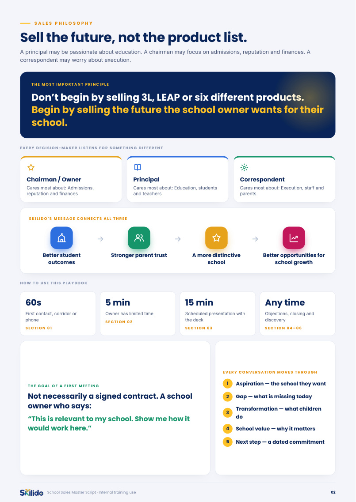
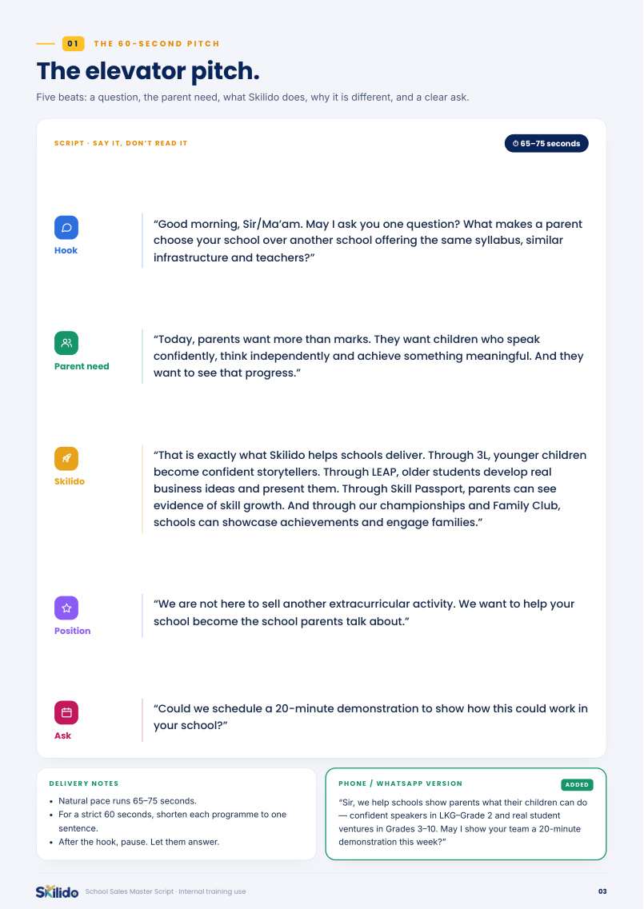
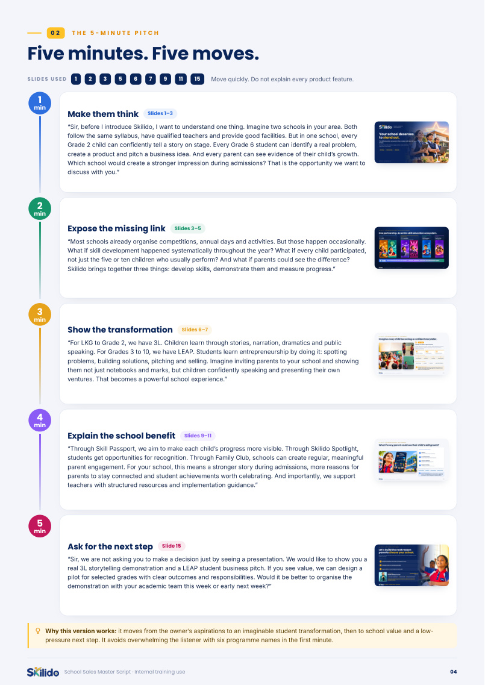
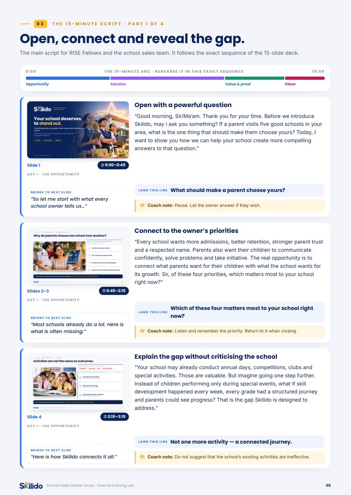
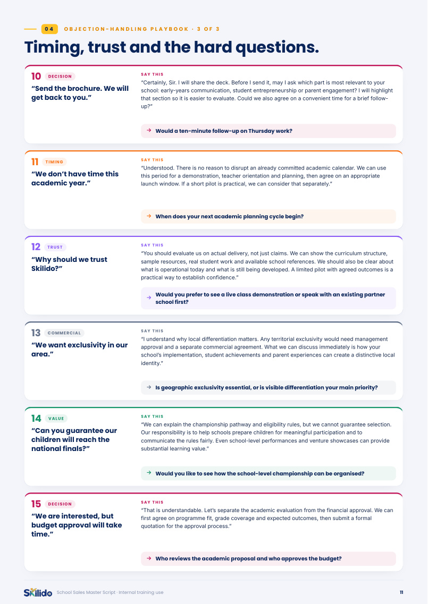
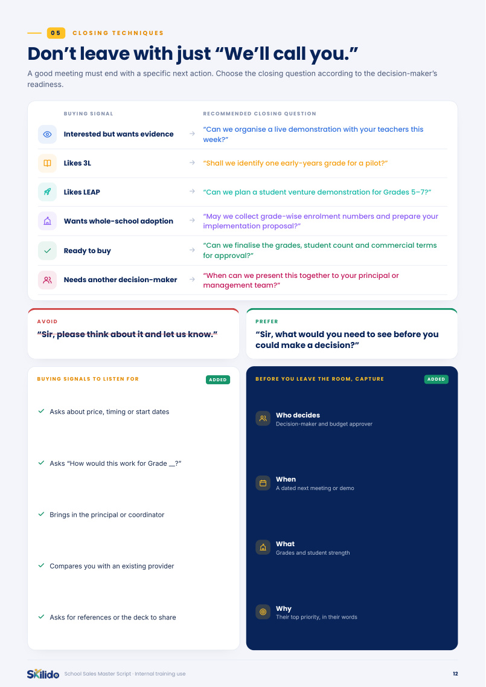
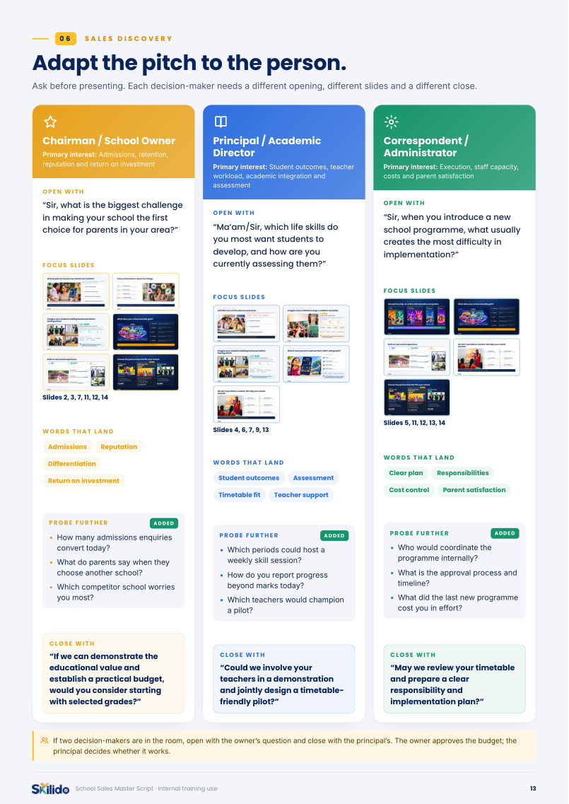
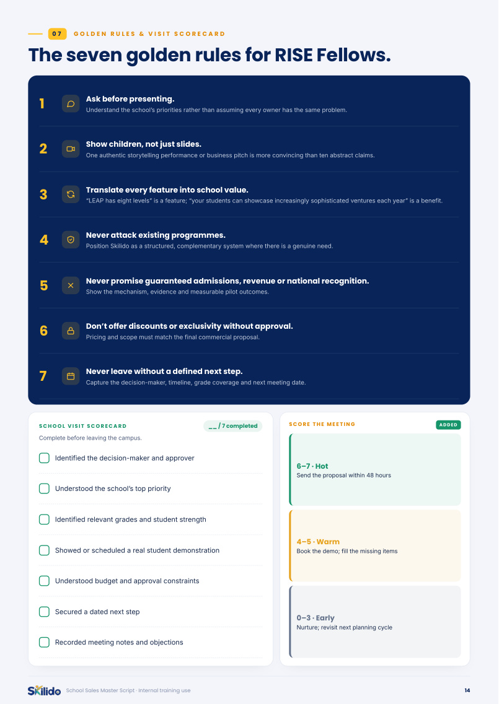
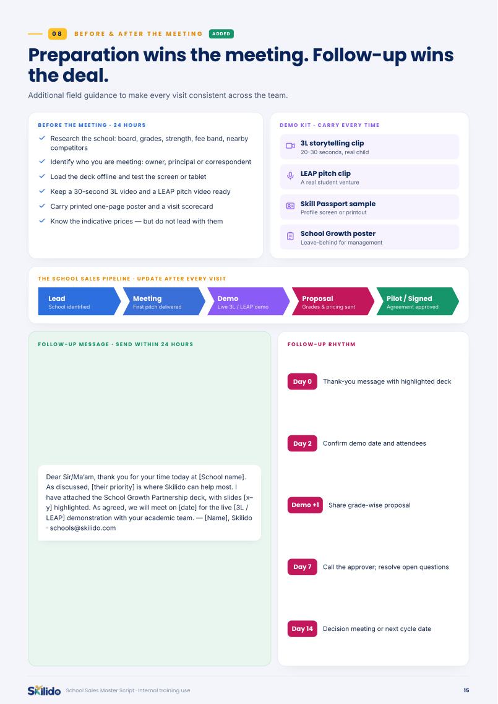
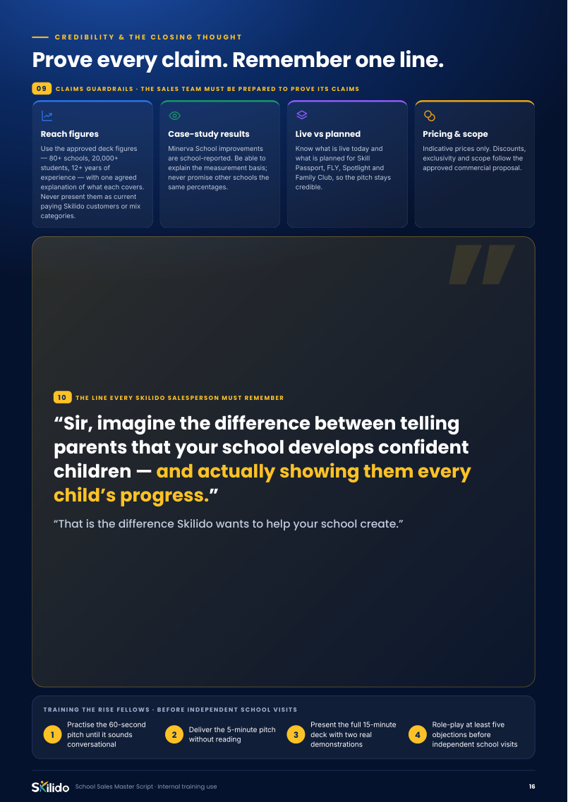